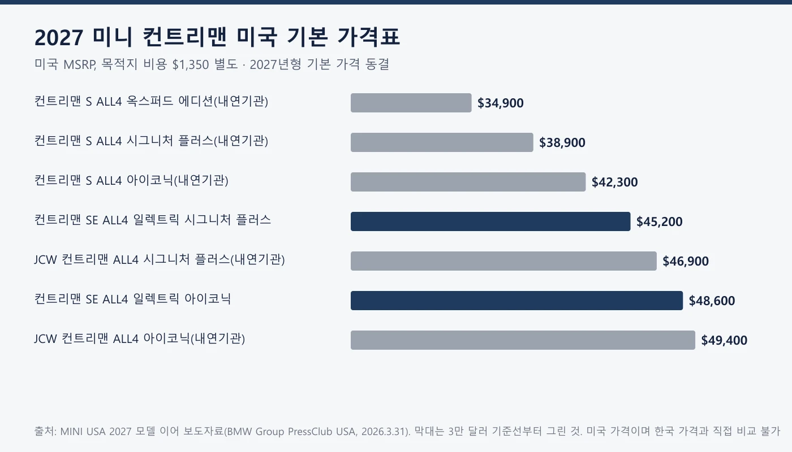
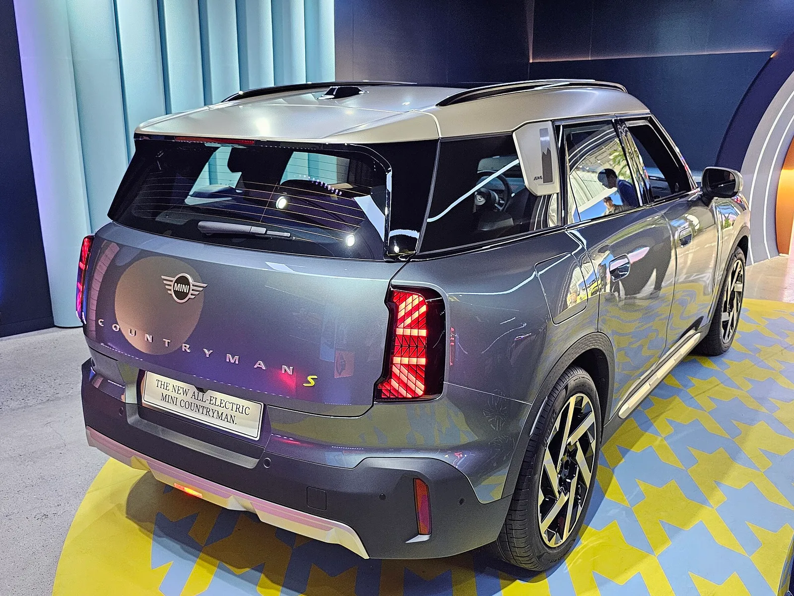
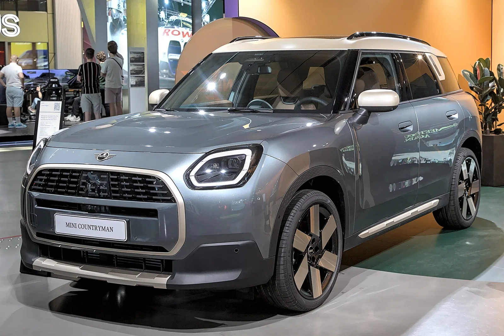
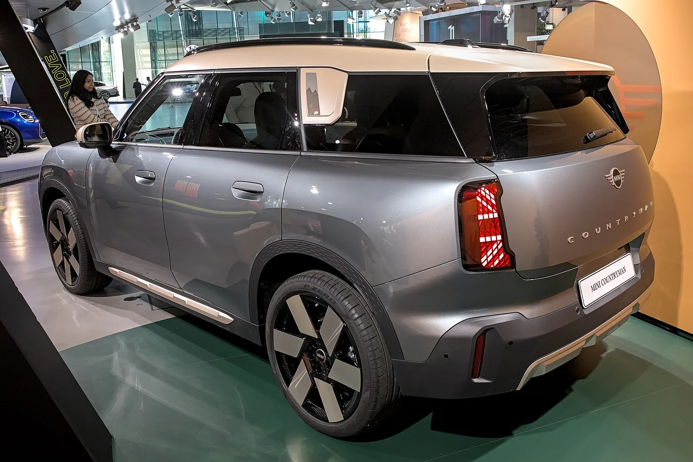
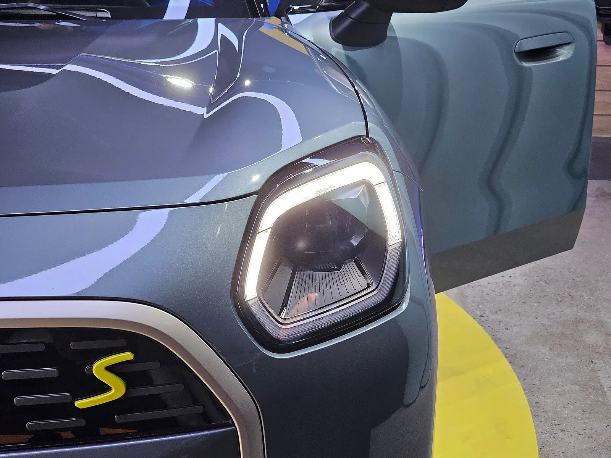
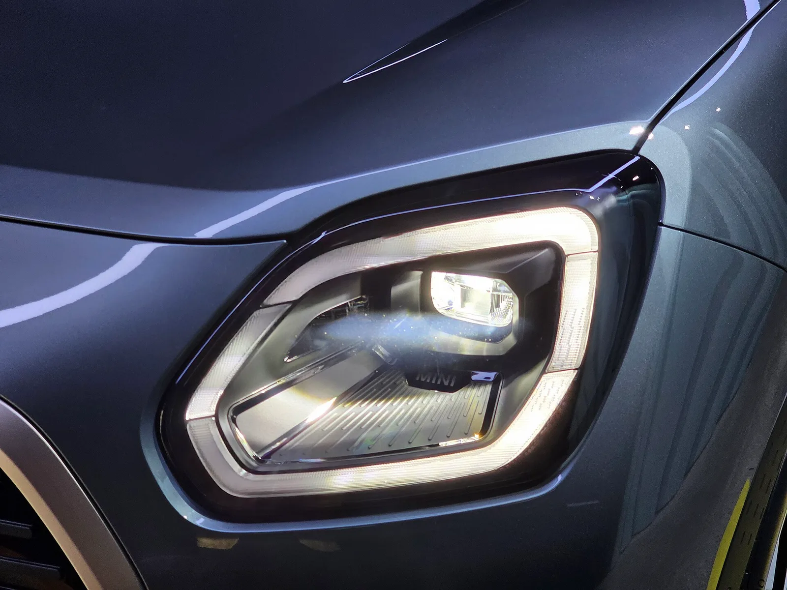

▲ 미니 컨트리맨 일렉트릭(U25) 전시차 (위키미디어 파일명상 SE ALL4, 연식·사양 단정 불가)
"새 차가 나온 게 아니라, 2027년형 숫자가 정리됐다." 먼저 전제를 바로잡는다. 미니 컨트리맨 일렉트릭(SE ALL4)의 2027년형은 이번 주에 처음 공개된 모델이 아니라, MINI USA가 2026년 3월 31일 2027년형 라인업을 발표하면서 가격을 동결한 모델이다. 이 글은 BMW 그룹 프레스클럽 USA의 발표문, MINI USA 공식 사양 페이지, 2025년형 미국 기술 제원표(공식 PDF)를 1차 근거로 삼아 미국 2027년형 가격과 주행거리, 배터리, 출력을 정리하고, 한국에서 판매 중인 신형 일렉트릭 컨트리맨과 숫자를 나란히 놓았다. 한국 쪽 수치는 미니코리아 공식 발표문을 직접 열람하지 못해 언론 3곳(오토트리뷴·스타뉴스코리아·뉴스핌)의 8월 13일자 보도를 근거로 했다. 한국에서 구체적인 기술 변화는 한국 신형 주행거리 분석 기사에서 자세히 풀었으니 이 글은 미국 2027년형을 중심으로 본다.
1. 이번 소식의 정확한 정체 — 3월 31일 발표와 사양 페이지
미국 2027년형 컨트리맨 가격표의 출처는 BMW 그룹 프레스클럽 USA가 2026년 3월 31일 올린 보도자료다. 제목은 옥스퍼드 에디션 복귀 소식이지만 본문에서 2027년형 전체 가격과 변경점을 정리한다. 라인업은 S ALL4, SE ALL4(전기), 존 쿠퍼 웍스(JCW) 컨트리맨 ALL4 세 가지이고 목적지·취급 비용(D&H)은 모든 모델 1,350달러다. 이 자료에는 전기차 주행거리와 배터리 용량, 정확한 판매 개시일은 들어 있지 않다. 원문은 MINI USA 보도자료 바로가기 에서 볼 수 있다.
Car and Driver의 '2027 Mini Countryman Electric' 페이지(Notion에 10월 6일 수집)는 접속이 되지 않아 본문을 확인하지 못했다. 그래서 주행거리와 배터리는 MINI USA 공식 사양 페이지(MINI USA 사양 페이지 바로가기)와 2025년형 기술 제원표(2025 SE ALL4 제원표 PDF 바로가기)로 확인했다.
▲ 컨트리맨 일렉트릭(U25) 전시차. 위키미디어 파일명상 SE ALL4이며, 2027년형 사양과 같다고 단정할 수 없다. ⓒ Damian B Oh / Wikimedia Commons, CC BY-SA 4.0
2. 미국 2027년형 가격표
SE ALL4 일렉트릭은 시그니처 플러스 45,200달러, 아이코닉 48,600달러이며, 보도자료는 "2027년형 기본 가격은 전년도와 같다"고 적었다. 같은 표에서 내연기관 S ALL4는 옥스퍼드 에디션 34,900달러부터 아이코닉 42,300달러, JCW는 46,900~49,400달러다. 모든 가격에 D&H 1,350달러가 따로 붙는다.
| 모델 | 시그니처 플러스 | 아이코닉 | 비고 |
|---|---|---|---|
| S ALL4(내연기관) | 38,900달러 | 42,300달러 | 옥스퍼드 에디션 34,900달러 |
| SE ALL4(전기) | 45,200달러 | 48,600달러 | 목적지 비용 별도 |
| JCW ALL4(내연기관) | 46,900달러 | 49,400달러 | 미국 JCW 컨트리맨은 가솔린 |

▲ MINI USA 2027년형 보도자료의 기본 가격을 카프리즘이 막대 도표로 정리했다(기준선 3만 달러). ⓒ 카프리즘 정리, 수치 출처 MINI USA
가격 이야기에는 두 가지 주의가 필요하다. 하나는 MINI USA 쇼핑 페이지에 "패키지를 포함해 보이는 가격"이 별도로 있어 보도마다 SE ALL4가 47,800달러로 소개되는 경우가 있다는 점이다. 이는 옵션이 들어간 가격이어서 기본 가격과 섞으면 안 된다. 다른 하나는 딜러 재고 사이트의 표시 가격(51,800달러 등)이 공식 가격이 아니라는 점이다. 이 글은 보도자료의 기본 가격만 쓴다. 달러를 원화로 환산한 값은 적지 않았다.
3. 2027년형 SE ALL4에서 실제로 바뀐 것
보도자료가 밝힌 2027년형 변경 중 SE ALL4와 관련된 것은 세 가지다. 첫째, 씰 앤 드라이브(Seal & Drive) 타이어 키트가 기본이 됐고 기존 모빌리티 키트를 대체한다. 펑크 시 임시로 새는 곳을 막아 서비스센터까지 갈 수 있게 하는 장치다. 둘째, 페이버드 스타일(Favoured Style) 옵션에 트레일러 히치(700달러 상당)가 포함되고 옵션 가격은 100달러만 오른다. 셋째, 시그니처 플러스·아이코닉 트림에서 차고 문 개폐기가 250달러짜리 단독 옵션이 됐다(SE ALL4만이 아니라 2027년형 컨트리맨 전체에 해당하고 옥스퍼드 에디션은 제외). 카스쿱스는 이를 두고 SE ALL4가 스페어타이어를 포기한 것으로 보인다고 해석했는데, 보도자료 자체는 "모빌리티 키트를 대체한다"까지만 적었다.

▲ 컨트리맨 일렉트릭 전시차의 뒷모습. 세로형 테일램프가 특징이다. ⓒ Damian B Oh / Wikimedia Commons, CC BY-SA 4.0
4. 배터리·주행거리·성능 — 2025년형 표와 2027년형 페이지
MINI USA 공식 사양 페이지는 2027년형 SE ALL4가 "최대 216마일"을 달리고 0→60mph 5.4초이며 배터리는 64.7kWh라고 안내한다. 2025년형 공식 기술 제원표는 같은 차의 EPA 주행거리를 212마일로 적었다. 단순 비교하면 4마일 늘었지만, 두 자료가 같은 휠 기준인지는 사양 페이지에 적혀 있지 않아 확인하지 못했다. 한 제3자 사이트(MPGBuddy)는 2026년형 19인치 휠 사양이 204마일로 더 낮다고 전하는데, 이는 공식 확인이 아니다.
| 항목 | 2025년형 공식 제원표 | 2027년형 사양 페이지 |
|---|---|---|
| 최고출력 | 308hp | 페이지에 없음 |
| 최대토크 | 364lb-ft(약 50.3kg·m) | 페이지에 없음 |
| 배터리 용량 | 총 66.5kWh · 순 64.7kWh | 64.7kWh(총·순 구분 표기 없음) |
| EPA 주행거리 | 212마일(약 341km) | 최대 216마일(약 348km) |
| 0→60mph | 5.4초 | 5.4초 |
| DC 급속충전 | 최대 130kW, 10→80% 29분 | 페이지에 없음 |
| 구동방식 | 전·후륜 모터 AWD | AWD(SE ALL4 명칭) |
마일을 km로 환산한 값은 1마일=1.609344km로 계산했다. EPA 수치는 미국 시험 방식이어서 WLTP나 한국 인증 수치와 같은 선에 놓을 수 없다. 2027년형 출력·충전 시간이 2025년형과 같은지는 공식 자료로 확인하지 못했고, 위 표에서도 비어 있는 칸은 그대로 비워 두었다.

▲ 컨트리맨 SE 전시차(위키미디어 파일명 기준). 크림색 루프와 팔각형 그릴, 얇은 프레임 헤드램프가 보인다. ⓒ Alexander-93 / Wikimedia Commons, CC BY-SA 4.0
5. 한국에서 파는 신형과 숫자를 나란히 놓으면
한국에서는 신형 일렉트릭 컨트리맨이 2026년 8월 13일 출시됐고, 보도 기준 가격은 E 클래식 5,890만 원, SE ALL4 페이버드 6,350만 원, SE ALL4 JCW 6,610만 원(부가세 포함)이다. 미국 2027년형과 같은 차종이지만 트림 구성과 인증 기준이 달라 1대1로 비교하기는 어렵다. 아래 표는 두 시장의 SE ALL4 자료를 한 줄씩 옮긴 것이다.
| 항목 | 미국(MINI USA 자료) | 한국(2026.8.13 언론 보도) |
|---|---|---|
| 가격 | 45,200달러(시그니처 플러스)·48,600달러(아이코닉), D&H 1,350달러 별도 | 6,350만 원(페이버드)·6,610만 원(JCW), 부가세 포함 |
| 출력 | 308hp(2025년형 제원표) | 313마력(보도) |
| 토크 | 364lb-ft(약 50.3kg·m) | 50.4kg·m |
| 가속 | 0→60mph 5.4초 | 0→100km/h 5.6초 |
| 배터리 | 총 66.5kWh · 순 64.7kWh(2025년형 표) | 총 66.5kWh · 순 65.2kWh |
| 주행거리 | EPA 최대 216마일(약 348km) | 361km(국내 기준, 보도) |
| 급속충전 10→80% | 29분(2025년형 표, 최대 130kW) | 약 29분(스타뉴스코리아 보도) |
숫자가 비슷해 보여도 해석에는 조심해야 한다. 출력 308hp와 313마력은 단위(SAE 마력과 메트릭 마력)가 다르기 때문에 같은 값일 가능성이 있지만, 두 자료가 같은 값임을 확인하지는 못했다. 순 배터리 용량이 미국 64.7kWh와 한국 65.2kWh로 다르게 적힌 이유도 공식 자료에서 찾지 못했다. 환산 가능한 토크(364lb-ft≈50.3kg·m)만 사실상 일치한다. 미국 EPA 216마일(약 348km)과 한국 361km는 시험 방법이 달라 우열을 말할 수 없다.

▲ 컨트리맨 SE 전시차의 뒷모습(위키미디어 파일명 기준). ⓒ Alexander-93 / Wikimedia Commons, CC BY-SA 4.0
6. 이 숫자들을 읽을 때 주의할 점
주행거리 216마일과 361km, 배터리 64.7kWh와 65.2kWh는 서로 다른 기준의 숫자다. 한국 신형에서 늘었다는 32~35km는 한국 인증 기준 변화이고, 미국에서 4마일이 늘었다는 것은 서로 다른 해의 공식 자료를 비교한 값이다. 둘을 합치거나 같은 개선으로 해석하면 안 된다. 한국 개선의 원인(실리콘 카바이드 인버터, 가용 배터리 용량 확대, 공기저항계수 0.26)은 앞선 기사에서 풀었고, 미국 2027년형 페이지에서 같은 기술 변경이 있었는지는 확인하지 못했다. 컨트리맨이 속한 미니 전기차 라인업의 큰 방향은 미니 쿠퍼 EV 후륜구동 보도 기사에서 확인할 수 있다.

▲ 헤드램프와 그릴의 노란색 S 로고 부분. ⓒ Damian B Oh / Wikimedia Commons, CC BY-SA 4.0
7. 한국 독자가 확인한 것과 못 한 것
| 항목 | 상태 |
|---|---|
| 신형 일렉트릭 컨트리맨 국내 출시 | 2026년 8월 13일 출시, 언론 3곳 보도 일치(미니코리아 공식 발표문은 직접 확인 못함) |
| 국내 가격 | E 클래식 5,890만 원 / SE ALL4 페이버드 6,350만 원 / SE ALL4 JCW 6,610만 원(부가세 포함, 보도) |
| 미국 2027년형 사양의 국내 도입 | 확인하지 못함 |
| 미국 가격 환산 | 환율·세금이 달라 의미가 없어 환산하지 않음 |
| 국내 인증 주행거리 | E 381km(+32km), SE ALL4 361km(+35km), 보도 |
국내 보도에서 모델별 가격 인상 폭은 확인되지 않았다. 스타뉴스코리아는 제목에서 "가격도 비싸져"라고 썼지만 이전 가격을 적지 않았고, 다른 두 매체는 가격 비교 자체를 쓰지 않았다. 따라서 얼마나 올랐는지는 단정하지 않는다.

▲ 팔각형 LED 헤드램프 클로즈업. ⓒ Damian B Oh / Wikimedia Commons, CC BY-SA 4.0
✅ 이 소식을 볼 때 확인할 점
· 2027년형은 "새로 공개된 차"가 아니라 2026년 3월 31일 발표된 연식 변경(가격 동결)이다
· 미국 45,200달러·48,600달러는 D&H 1,350달러 별도, 패키지 포함 가격과 다르다
· 미국 EPA 216마일과 한국 인증 361km는 기준이 달라 직접 비교할 수 없다
· 한국 도입 사양·가격은 미니코리아 공식 발표를 직접 확인하지 못했다
8. 요약
2027 미니 컨트리맨 일렉트릭(SE ALL4)은 미국에서 시그니처 플러스 45,200달러, 아이코닉 48,600달러(D&H 1,350달러 별도)로 기본 가격이 동결됐고, MINI USA 사양 페이지는 최대 주행거리 216마일, 배터리 64.7kWh, 0→60mph 5.4초를 안내한다. 2025년형 공식 제원표의 212마일과 비교하면 4마일 늘었지만 휠 기준이 같은지는 확인하지 못했다.
한국에서는 신형이 2026년 8월 13일 E 클래식 5,890만 원부터 출시됐다는 보도가 있으나, 미국 2027년형 사양의 국내 도입 여부는 확인하지 못했다. 미국 EPA와 한국 인증 수치, 순 배터리 용량 64.7kWh와 65.2kWh는 기준이 달라 섞어 읽으면 안 된다.